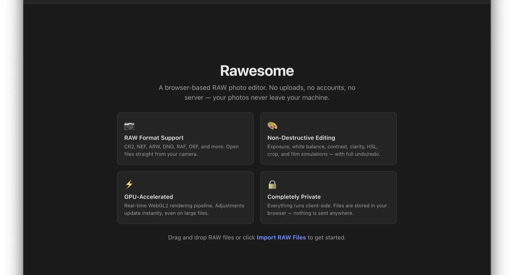
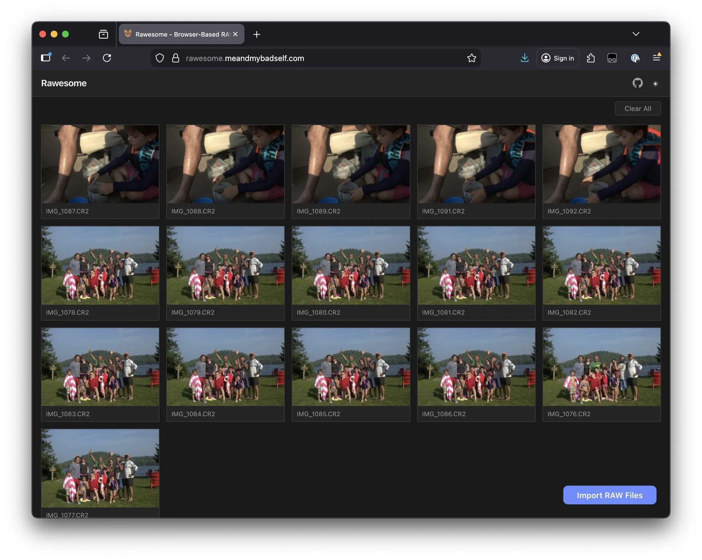
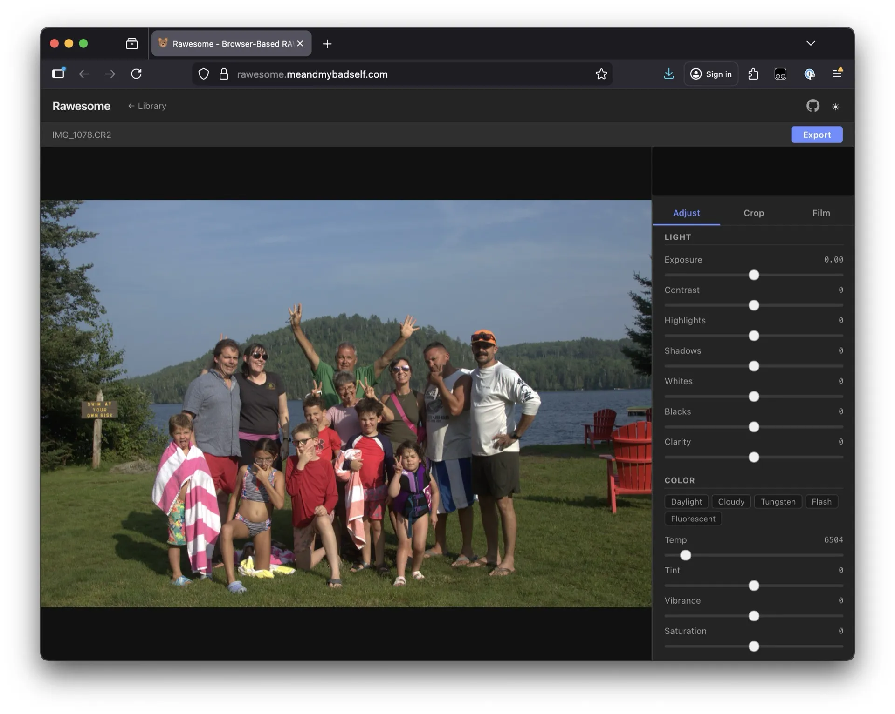
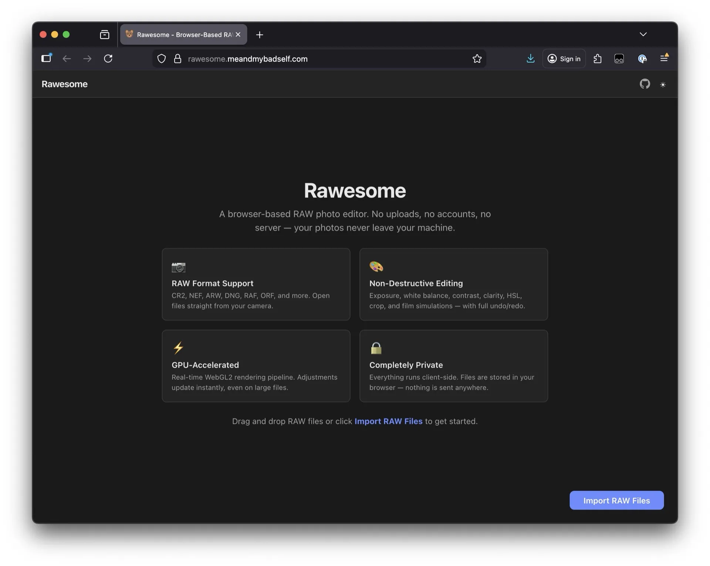

Rawesome

A browser-based RAW photo editor. Screw Lightroom — this processes RAW files directly in the browser, for free, with no uploads and no account required. Your photos never leave your machine.
GPU-accelerated via WebGL2 with support for CR2, NEF, ARW, DNG, RAF, ORF, and more. Non-destructive edits: exposure, white balance, contrast, clarity, HSL, crop, and film simulations.


